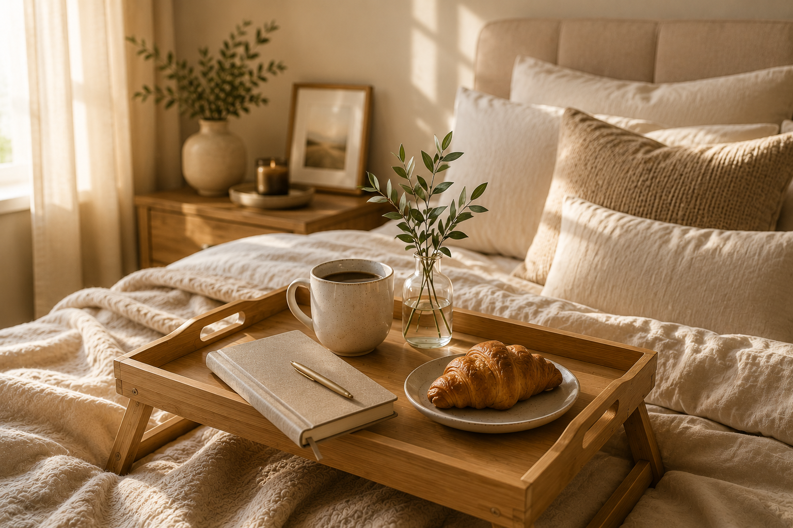
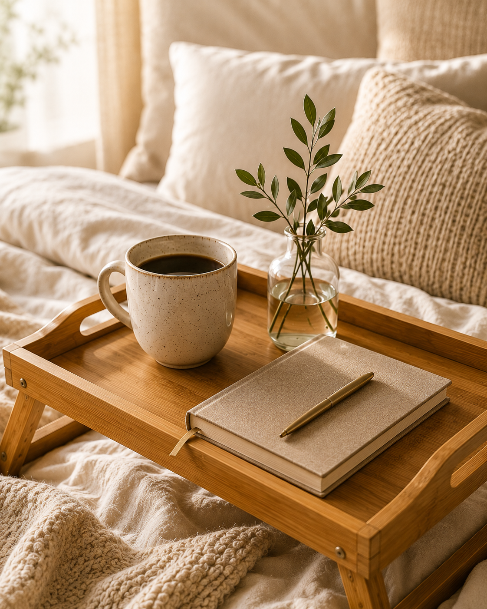
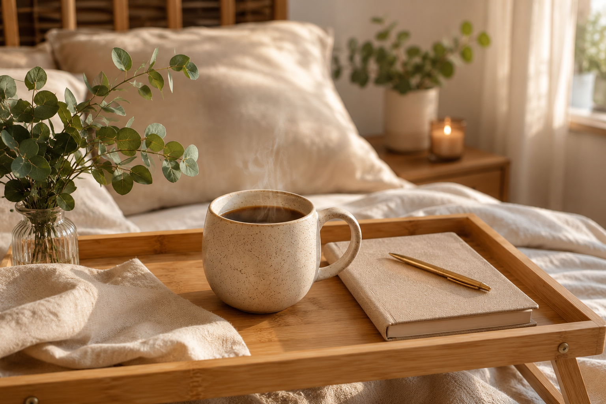
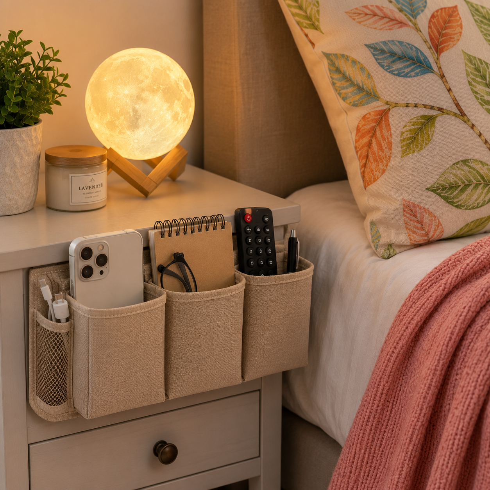

Introduction
There's something special about slow mornings. A calm bedroom, a warm cup of coffee, and few thoughful details can make the start of the day feel more relaxing and intentional.
The good news is that creating this cozy atmosphere doesn't require a complete bedroom makeover. A handful of well-chosen pieces can transform your space into a place that feels comfortable, inviting, and easy to enjoy every morning.
In this article, you'll find cozy bedroom essentials that combine style and fucntion, helping you create a space that encourages slower mornings, better routines, and a more relaxing start to the day.
Affiliate Disclosure: This article may contain affiliate links. If you purchase through these links, we may earn a small commission at no additional cost to you.
Quick Overview
| Product | Best For | Why You'll Love It |
|---|---|---|
| Wooden Bed Tray | Breakfast in bed | Creates a cozy and functional morning setup |
| Ceramic Coffee Mug | Morning coffee rituals | Makes everyday moments feel more enjoyable |
| Linen Journal | Mindful morning routines | Perfect for journaling, planning, or reflection |
| Glass Bud Vase with Greenery | Simple bedroom styling | Adds a fresh and calming touch to any space |
| Neutral Bedding Set | Everyday comfort | Helps create a warm and relaxing bedroom atmosphere |
Whether you're enjoying a quiet cup of coffee, writing in a journal, or simple taking few extra minutes to relax before the day begins, these cozy bedroom essentials can help create a more comfortable and inviting space. Let's start with one of my favorite pieces for slow mornings
1. Bed Tray

A wooden bamboo bed tray is one of the simplest ways to make your bedroom feel more comfortable and functional. Whether you're enjoying a morning coffee, reading a book, or writing in a journal, a dedicated tray creates a convenient surface without sacrificing comfort.
I particularly like bamboo trays because they're lightweight, durable, and easy to move around the house. The natuarl wood finish also components most bedroom styles, from modern minimalist spaces to cozy neutral interiors.
This foldable bamboo bed tray offers plenty of rooom for a coffee mug, notebook, breakfast plate, or small decorative accents. When not i use, the folding legs make it easy to store, making it practical addition to everyday routines.
Why We Like It
- Natural bamboo construction
- Warm wood finish that suits most decor styles
- Foldable legs for easy storage
- Ideas for breakfast in bed, reading, or journaling
- Lightweight and easy to carry
2. Ceramic Coffee Mug

A cermaic coffee mug may seem like a small detail, but it can have a surprising impact on your daily routine. The right mug turns an ordinary cup of coffee into a simple ritual, encouraging you to slow down and enjoy a quiet moment before the day begins.
I love ceramic mugs because they feel substantial in your hands and bring a sense of warmth to any morning setup. Wheter you're reading a book, writing in a journal, or enjoying breakfast in bed, a well-made mug adds both comfort and character to the experience.
For a cozy bedroom aesthetic, choose a mug with a neutral color palette and an organic shape. Handmade or speckled ceramic designs work especially well because they add texture and visual interest without overwhelming the space.
Why We Like It
- Creates a more intentional morning routine
- Adds warmth and character to your bedroom setup
- Complements neutral and cozy decor styles
- Perfect for coffee, tea, or hot chocolate
- Easy to style in bedroom and lifestyle spaces
3. Linen Journal
A linen journal is one of the simplest tools for creating a calmer and more intentional morning routine. Taking just a few minutes to write down thoughts, goals, or reflections can help clear your mind and set a positive tone for the day ahead.
What i love most about linen journal is that it encourages you to slow down. Unlike digital notes or phone apps, putting pen to paper feels more personal and distraction-free. It's a small habit that can make mornings feel less rushed and more purposeful.
The natural texture and neutral appearance of a linen-covered journal also fit beautifully into a cozy bedroom aesthetic. Whether it's placed on a bed tray, nightstand, or reading nook, it adds both funtions and style to the space.
Why We Like It
- Encourages mindful morning habits
- Creates space for reflection and planning
- Helps reduce distractions from screens
- Complements neutral and cozy decor styles
- Beautiful enough to display when not it use
4. Bedside Organizer

A bedside organizer helps keep everyday essentials within reach while reducing clutter. It provides a convenient place for items such as phones, remotes, notebooks, and glasses.
Why We Like It
- Keeps bedside items organized
- Reduces clutter around the bed
- Easy access to daily essentials
- Practical and functional design
5. Pichwai Wall Art

Wall art can transform a plain bedroom wall into a beautiful focal point. A Pichwai-inspired artwork featuring scenic imagery adds character and visual interest while enhancing the overall style of the room.
Why We Like It
- Enhances empty wall spaces
- Creates a decorative focal point
- Adds personality to the bedroom
- Complements a variety of decor styles
Frequently Asked Questions
What are the easiest ways to decorate a bedroom on a budget?
Simple additions such as decorative pillow covers, throw blankets, wall art, and soft lighting can instantly improve the appearance of a bedroom without requiring a large budget.
How can I make my bedroom feel more cozy?
Adding soft textures, warm lighting, comfortable bedding, and decorative accessories can help create a warm and inviting atmosphere.
Are decorative pillow covers worth buying?
Yes. Pillow covers are an affordable way to refresh bedroom decor and can easily be changed to match different seasons or styles.
Where should a moon lamp be placed in a bedroom?
A moon lamp works best on a bedside table, shelf, or dresser where it can provide soft ambient lighting and serve as a decorative accent.
How do I keep my bedside area organized?
Using a bedside organizer can help store everyday essentials such as phones, glasses, notebooks, and remote controls while reducing clutter.
What type of wall art looks best in a bedroom?
The best wall art depends on personal preference, but calming artwork, landscapes, nature-inspired designs, and decorative prints often work well in bedrooms.
Final Thoughts
Creating a beautiful bedroom doesn't require major renovations. Small decorative additions such as colorful pillow covers, a cozy throw blanket, soft lighting, organized storage, and attractive wall art can make a significant difference.
These simple bedroom decor ideas can help create a comfortable and relaxing space that feels both stylish and inviting.